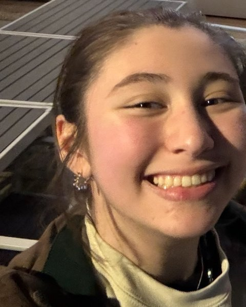
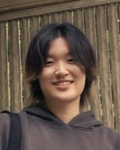
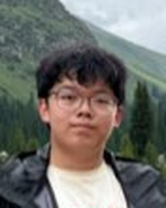
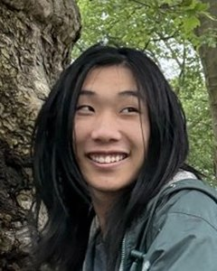
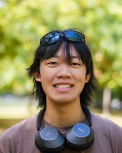

People

Juan R. Chamorro
CVJuan studied chemistry at Johns Hopkins University from 2013 to 2021, first as an undergraduate and then as a PhD student, and was a postdoctoral fellow at the University of California, Santa Barbara, in the Materials Department and the Materials Research Laboratory from 2021 to 2024. In his free time he enjoys travel and reading.
Wean Hall 4305 · (412) 268-7178 · jchamorr@andrew.cmu.edu
Awards and honors
- National Science Foundation, MPS-Ascend Faculty Catalyst Award2025
- Kaufman Foundation, New Investigator Grant2025
- National Science Foundation, MPS-Ascend Postdoctoral Fellowship2021
- Johns Hopkins University, Gompf Family Fellowship2019
- Ludo Frevel Crystallography Scholarship2018

Julian Marmo
Julian was raised in Queens, New York. His earlier research spans device fabrication, material development for polymer additive manufacturing, and metamaterial design. He now leads the group's AutoFlux platform, building the instrument and the in-furnace imaging that enable real-time control, optimization, and autonomy. In his free time he enjoys card games, watching sports, reading, and spending time with his dogs.

Nicholas Shkolnikov
Nicholas is originally from San Francisco. His earlier research spans CO2 emissions mitigation through green methanol and dimethyl ether synthesis, and failure analysis of lithium-ion batteries. He now works on layered magnetic sulfides, tuning their composition to steer the local structure and measuring the result by diffuse scattering and pair distribution function analysis. In his free time he enjoys running, cooking, reading, and board games.

Tong Wang
Tong was born in Dalian, China. Her earlier research spans semiconductors and DFT calculations. She now grows and measures mixed-anion pyrochlores, where orbital degeneracy can survive to low temperature and open a route to spin-orbital liquid behavior. In her free time she enjoys music, playing the zheng (a traditional Eastern stringed instrument), and building LEGO.

Hayden Nuyens
Hayden grew up in San Rafael, California. His earlier research spans radioactivity, optics, and deep learning. He now maps how composition drives structure across frustrated spinel magnets, comparing synthesis routes by diffraction. In his free time he enjoys composing and listening to music, practicing bass guitar, pestering his cat, and playing video games.

Dhiya Srikanth
Dhiya grew up in Northern Virginia. Her earlier research spans the synthesis and characterization of high-entropy oxides in bulk and thin-film form. She is now starting on flux crystal growth. In her free time she enjoys reading, doing puzzles, and playing board games.

Emma Greco
Emma is a physics major and works on AutoFlux, where she brings that background to the growth and measurement side of the platform.

T’Ana Moore
T’Ana works on AutoFlux, where she brings her background in statistics, data science, and optics to the imaging side of the platform.

Megan Yeager
Megan works on AutoFlux, where she brings her machining and mechanical design experience to the furnace and the apparatus around it. She also builds race cars with Carnegie Mellon Racing.
 Gary ZhangNSF REU student, Summer 2026
Gary ZhangNSF REU student, Summer 2026
Abby ChenUndergraduate researcher, 2025 to 2026- Luis HierroUndergraduate researcher, 2025 to 2026

David LiUndergraduate researcher, 2025 to 2026
Daniel YinUndergraduate researcher, 2025 to 2026
Ryan NgaiUndergraduate researcher, Fall 2025- Stanley HolewaNSF REU student, Summer 2025
- Cassius NelsonUndergraduate researcher, Spring 2025